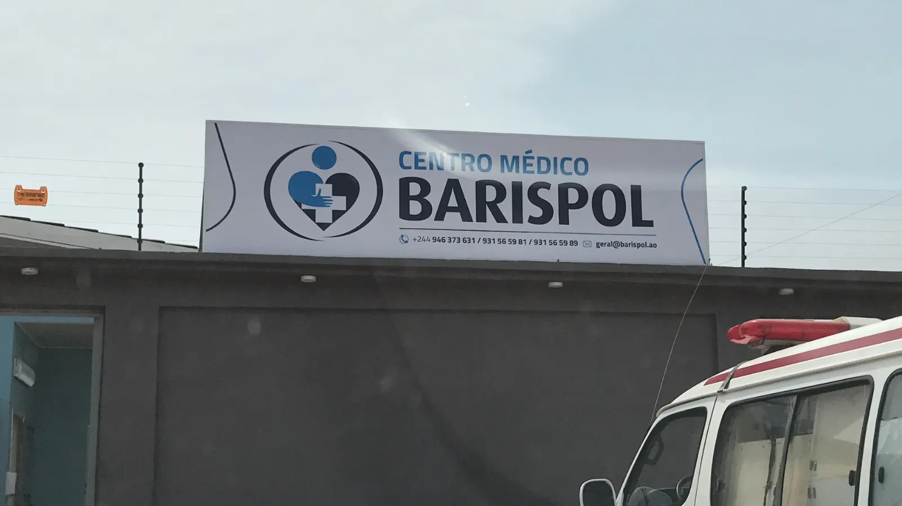
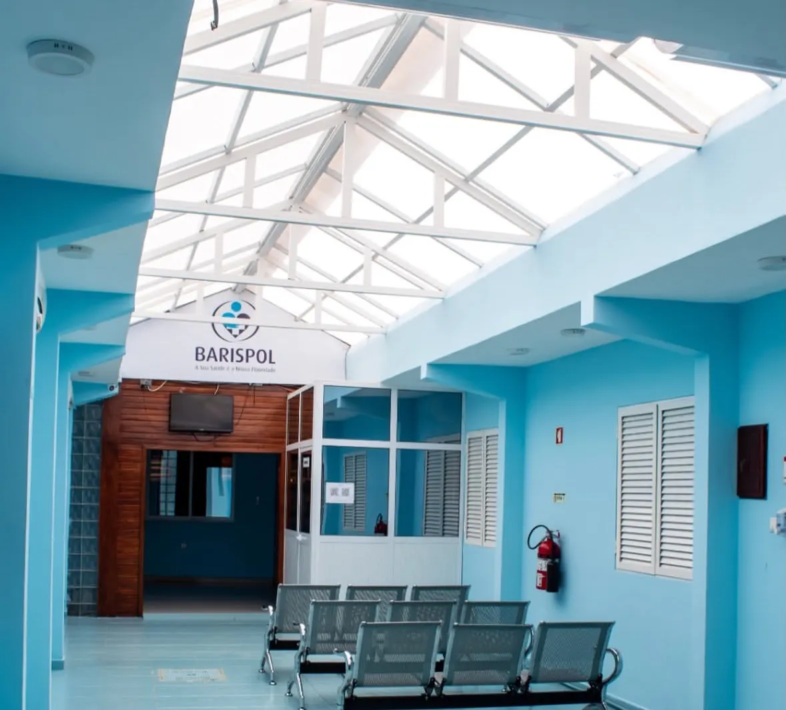

Início › A clínica
Em Camama desde 2016
Estamos no Bairro Bom Sossego, junto ao Hospital Materno Infantil Azancot de Menezes. Laboratório, consultórios, sala de observação, imagiologia e farmácia no mesmo edifício.


No mesmo edifício
Tudo num só sítio
Laboratório próprio: colhemos e analisamos aqui. A maioria dos resultados sai no mesmo dia. Ver as análises.
Consultórios: clínica geral, pediatria, ginecologia e obstetrícia e outras especialidades. Ver as consultas.
Imagiologia: ecografia com leitura por imagiologista e raio-X. Ver os exames.
Sala de observação e enfermagem, e farmácia interna com a medicação logo a seguir à consulta.
Onde estamos
Como chegar
Bairro Bom Sossego, Casa 186, Camama, Luanda. Junto ao Hospital Materno Infantil Azancot de Menezes.
A clínica
As nossas instalações
Precisa de análises ou de uma consulta?
Envie-nos o nome, o serviço e a data. A recepção confirma a hora.